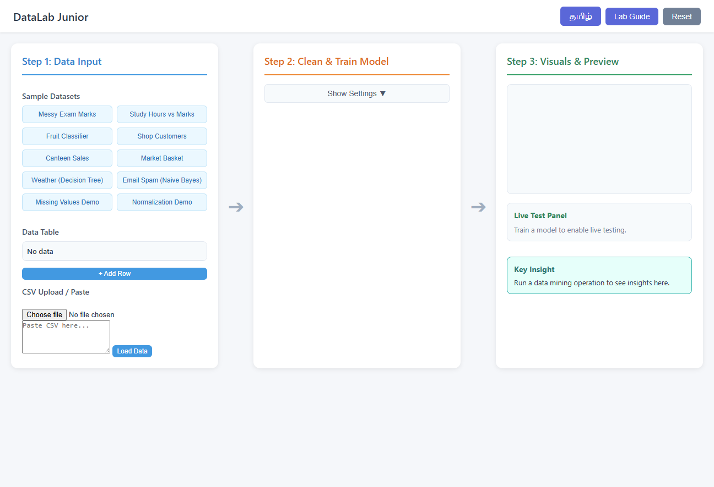
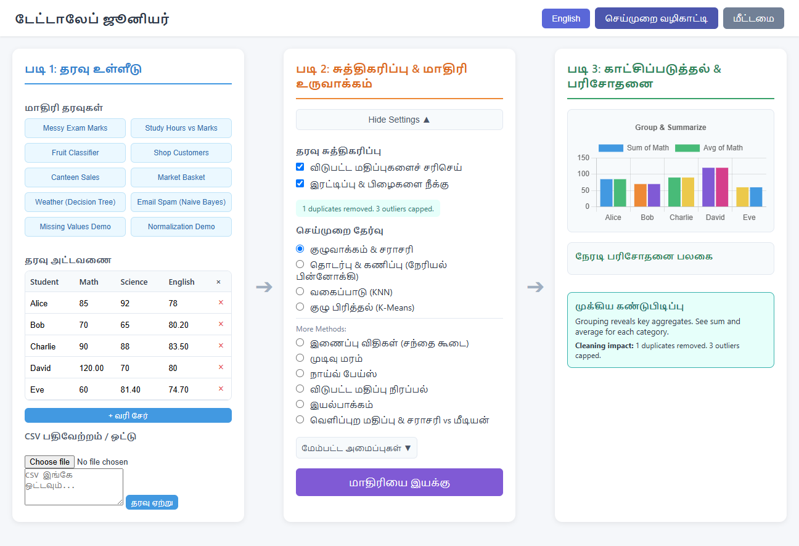
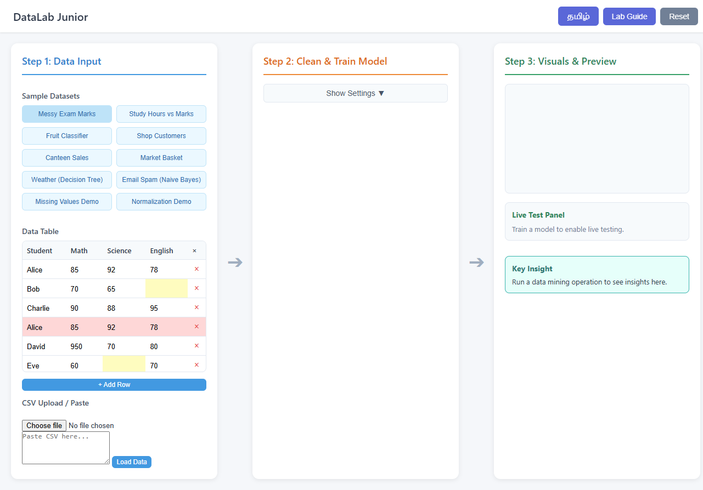
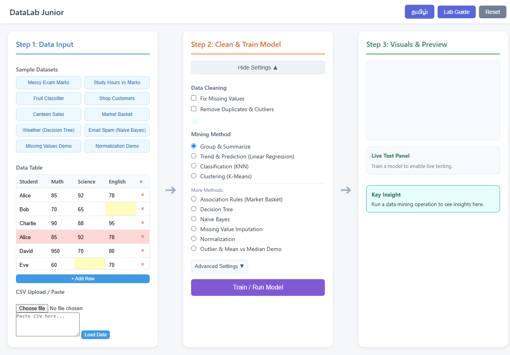
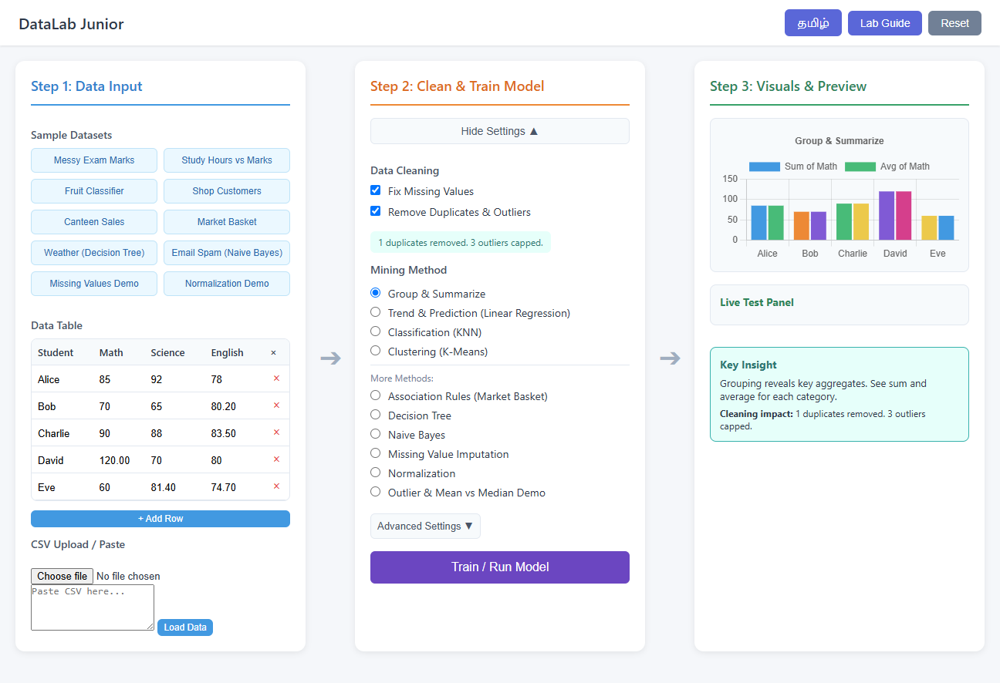
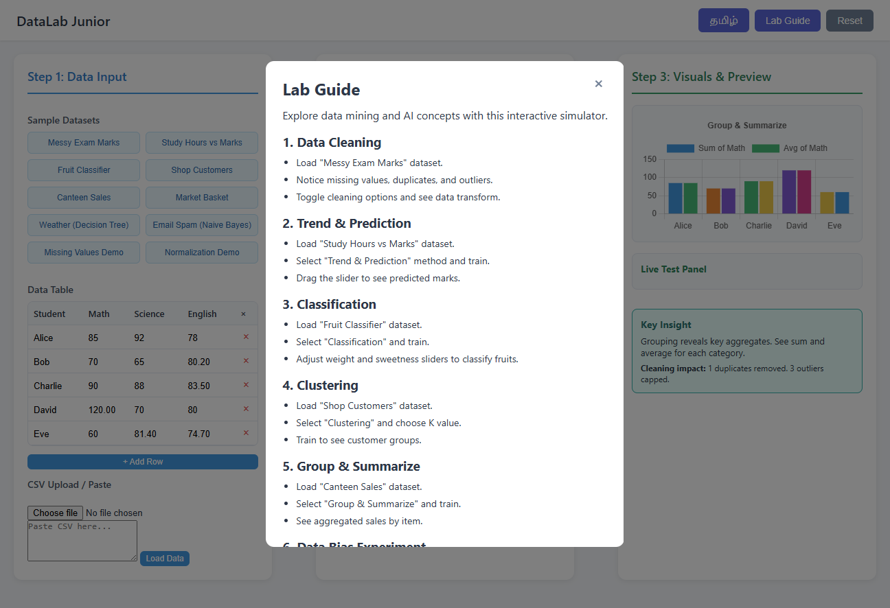

1. தொடக்கம் (Getting Started)
1
கோப்பை திறக்கவும்: `index.html` கோப்பை எந்த பிரவுசரிலும் (Chrome, Edge, Firefox) திறக்கவும். எந்த நிறுவலும் தேவையில்லை.

📸 முக்கிய திரை — 3-கார்டு பைப்லைன் லேஅவுட்
2
இடைமுகத்தை புரிந்து கொள்ளவும்: 3 கார்டுகள் உள்ளன — இடது (தரவு உள்ளீடு), நடு (சுத்திகரிப்பு & மாதிரி), வலது (காட்சிப்படுத்தல்). ➔ அம்புகள் இணைக்கின்றன.
3
மொழி மாற்றம்: தலைப்பு பட்டையில் "தமிழ்" அல்லது "English" பொத்தானை கிளிக் செய்து மொழியை மாற்றவும்.

📸 தமிழ் மொழி இடைமுகம்
💡 குறிப்பு: முதலில் அத்தியாயம் 1 & 2 படியுங்கள் — இடைமுகத்தை புரிந்து கொள்ள
2. டேட்டா ஏற்றுதல் (Loading Data)
1
மாதிரி டேட்டாசெட் ஏற்றுதல்: Card 1 இல் உள்ள மாதிரி டேட்டாசெட் பொத்தான்களில் ஒன்றை கிளிக் செய்யவும் (எ.கா., "Messy Exam Marks")

📸 டேட்டா ஏற்றப்பட்டது — அழுக்கு டேட்டா எச்சரிக்கைகளுடன்
2
டேட்டா அட்டவணை: ஏற்றப்பட்ட டேட்டா அட்டவணையில் காட்டப்படும். மஞ்சள்/சிவப்பு/ஆரஞ்சு நிற செல்கள் அழுக்கு டேட்டாவை குறிக்கும்.
3
CSV பதிவேற்றம்: "CSV Upload / Paste" பகுதியில் .csv கோப்பை பதிவேற்றவும் அல்லது CSV டேட்டாவை paste செய்து "Load Data" கிளிக் செய்யவும்.
4
செல் திருத்தம்: எந்த செல்லையும் கிளிக் செய்து திருத்தலாம். "+ Add Row" மற்றும் "×" பொத்தான்கள் மூலம் வரிகளை சேர்க்க/நீக்கலாம்.
💡 குறிப்பு: அழுக்கு டேட்டா எச்சரிக்கைகள்: 🟡 மஞ்சள் = விடுபட்ட மதிப்பு, 🔴 சிவப்பு = இரட்டிப்பு, 🟠 ஆரஞ்சு = வெளிப்புற மதிப்பு
3. டேட்டா சுத்திகரிப்பு (Data Cleaning)
1
செட்டிங்ஸ் விரிவாக்கம்: Card 2 இல் "Show Settings ▼" பொத்தானை கிளிக் செய்து செட்டிங்ஸ் விரிவாக்கவும்.

📸 செட்டிங்ஸ் விரிவாக்கம் — Cleaning, Methods, Advanced
2
Fix Missing Values: "Fix Missing Values" toggle ஐ இயக்கவும். விடுபட்ட எண் மதிப்புகள் காலம் சராசரியால் நிரப்பப்படும்.
3
Remove Duplicates & Outliers: "Remove Duplicates & Outliers" toggle ஐ இயக்கவும். இரட்டிப்பு வரிகள் நீக்கப்பட்டு, வெளிப்புற மதிப்புகள் IQR முறையில் கட்டுப்படுத்தப்படும்.
4
நிலை பட்டை: சுத்திகரிப்பு முடிந்ததும் நிலை பட்டையில் சுருக்கம் காட்டப்படும் (எ.கா., "2 missing values fixed. 1 duplicates removed.")
💡 குறிப்பு: சுத்திகரிப்பு இல்லாமலும் மாதிரியை இயக்கலாம். ஆனால் சுத்திகரிக்கப்பட்ட டேட்டா சிறந்த முடிவுகளை தரும்.
4. மாதிரி உருவாக்கம் (Model Training)
1
முறை தேர்வு: "Mining Method" பகுதியில் விரும்பிய முறையை தேர்வு செய்யவும் (எ.கா., Group & Summarize, Trend & Prediction, Classification, Clustering)
2
மேம்பட்ட முறைகள்: "More Methods" பகுதியில் Association Rules, Decision Tree, Naive Bayes, Imputation, Normalization, Outlier Demo ஆகியவை உள்ளன.
3
Advanced Settings: "Advanced Settings ▼" கிளிக் செய்து K value (Clustering) தேர்வு செய்யவும் (2, 3, அல்லது 4)
4
பயிற்சி: "Train / Run Model" பொத்தானை கிளிக் செய்யவும். ப்ரோக்ரஸ் பார் அனிமேஷன் முடியும் வரை காத்திருக்கவும் (1.5 விநாடிகள்)

📸 பயிற்சி முடிவு — சார்ட் + நேரடி பரிசோதனை + கண்டுபிடிப்பு
💡 குறிப்பு: சரியான டேட்டாசெட்டை தேர்வு செய்யவும் — ஒவ்வொரு முறைக்கும் பொருத்தமான டேட்டாசெட் உள்ளது. லேப் கைட் பார்க்கவும்.
5. காட்சிப்படுத்தல் (Visualization)
1
டைனமிக் சார்ட்: Card 3 இல் சார்ட் தானாகவே தேர்வு செய்யப்பட்ட முறைக்கு ஏற்ற வகையில் மாறும். மவுஸை ஹோவர் செய்தால் டூல்டிப் காட்டும்.
2
கண்டுபிடிப்பு பெட்டி (Insight Box): மாதிரி இயக்கியதும் தானாகவே ஒரு கண்டுபிடிப்பு பெட்டி காட்டப்படும் — தொடர்பு வகை, சுத்திகரிப்பு தாக்கம், முறை-சார்ந்த விளக்கம்.
3
டேட்டா ப்ரொஃபைல்: "Data Profile ▼" கிளிக் செய்து ஒவ்வொரு காலத்தின் Summary Statistics (Type, Count, Missing, Unique, Mean, Min, Max) பார்க்கவும்.
💡 குறிப்பு: Export PNG பொத்தான் மூலம் சார்ட்டை PNG ஆக சேமிக்கலாம். Export CSV மூலம் டேட்டாவை CSV ஆக சேமிக்கலாம்.
6. நேரடி பரிசோதனை (Live Testing)
1
ஸ்லைடர்கள்: Card 3 இல் "Live Test Panel" காட்டப்படும். ஒவ்வொரு முறைக்கும் தனி ஸ்லைடர்கள் இருக்கும்.
2
நேரடி கணிப்பு: ஸ்லைடரை இழுக்கும்போது கணிப்பு உடனடியாக மாறும். சார்ட்டில் கருப்பு புள்ளி நகரும்.
3
நம்பிக்கை பார்கள் (Classification): ஒவ்வொரு வகுப்பிற்கும் நம்பிக்கை சதவீதம் அனிமேஷன் மூலம் காட்டப்படும்.
4
Naive Bayes Classify: Word1, Word2, Word3 மதிப்புகளை 0/1 ஆக மாற்றி "Classify" பொத்தானை கிளிக் செய்யவும்.
💡 குறிப்பு: ஸ்லைடர்களை மெதுவாக இழுத்து முடிவுகள் எவ்வாறு மாறுகின்றன என்று கவனிக்கவும். இது மாதிரியின் நடத்தையை புரிந்து கொள்ள உதவும்.
7. மேம்பட்ட அம்சங்கள் (Advanced Features)
1
Export CSV: Header bar இல் "Export CSV" பொத்தானை கிளிக் செய்து டேட்டாவை CSV ஆக டவுன்லோட் செய்யவும்.
2
Export PNG: Header bar இல் "Export PNG" பொத்தானை கிளிக் செய்து சார்ட்டை PNG ஆக டவுன்லோட் செய்யவும்.
3
Print Report: Header bar இல் "Print" பொத்தானை கிளிக் செய்து முடிவுகளை அச்சிடவும் அல்லது PDF ஆக சேமிக்கவும்.
4
Data Validation: CSV ஒட்டும்போது தானாகவே பிழைகள் கண்டறியப்படும் (duplicate rows, empty headers, missing columns).
5
Data Profile: "Data Profile ▼" கிளிக் செய்து ஒவ்வொரு காலத்தின் Type, Count, Missing, Unique, Mean, Min, Max பார்க்கவும்.
💡 குறிப்பு: Print செய்யும்போது தேவையற்ற பகுதிகள் (buttons, toggles) தானாக மறைக்கப்படும் (@media print CSS).
8. பயிற்சி தட்டங்கள் (Lab Exercises)
1
லேப் கைட் திறக்க: தலைப்பு பட்டையில் "Lab Guide" பொத்தானை கிளிக் செய்து 12 பயிற்சி தட்டங்களை பார்க்கவும்.

📸 லேப் கைட் — 12 பயிற்சி தட்டங்கள்
2
பயிற்சி தேர்வு: 12 பயிற்சிகளில் ஒன்றை தேர்வு செய்யவும். ஒவ்வொன்றும் படிப்படியான வழிமுறைகளை கொண்டுள்ளது.
3
பயிற்சி செய்தல்: பயிற்சியில் கூறப்பட்ட டேட்டாசெட்டை ஏற்றி, முறையை தேர்வு செய்து, மாதிரியை இயக்கவும்.
4
கேள்விகளுக்கு பதில்: ஒவ்வொரு பயிற்சியிலும் கேள்விகள் உள்ளன. அவற்றுக்கு பதில் கண்டறியவும்.
💡 குறிப்பு: 24 விரிவான பயிற்சி தட்டங்கள் `DataLab-Junior-Lab-Exercises.md` கோப்பில் உள்ளன. VS Code இல் திறந்து படிக்கவும்.